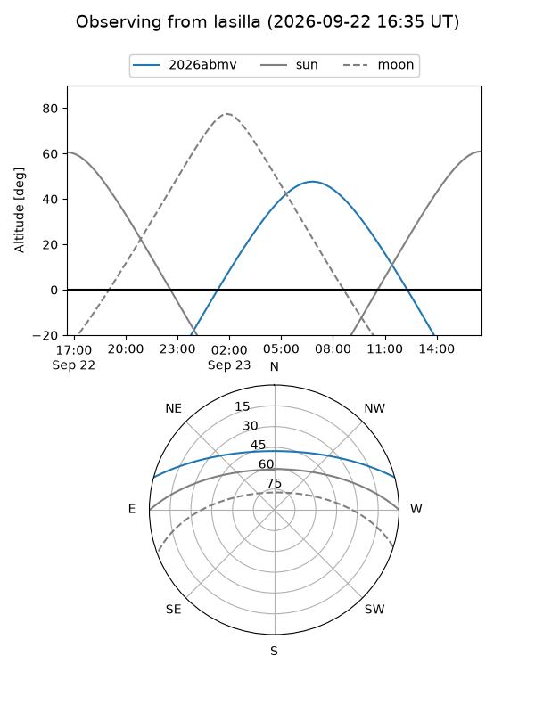
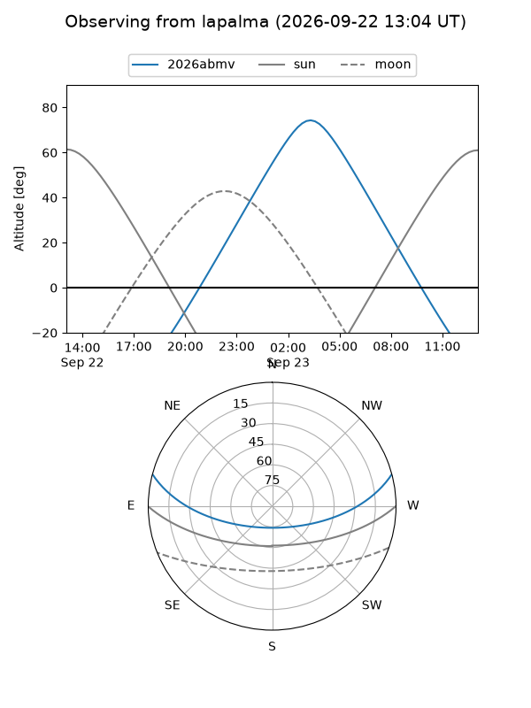
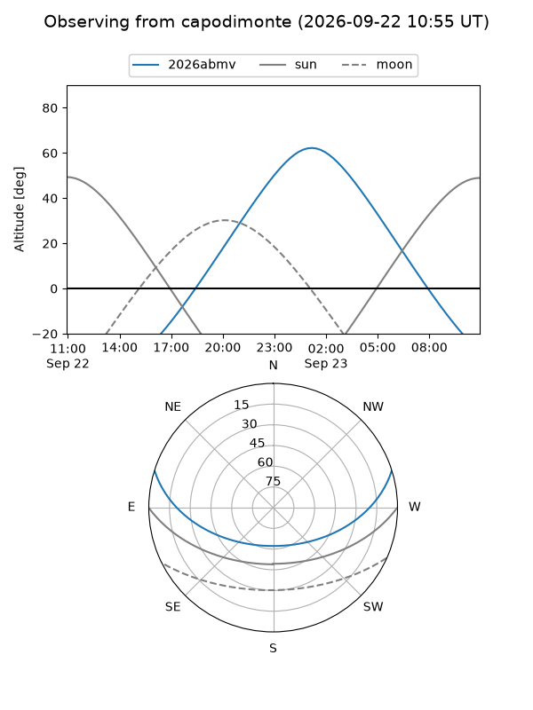
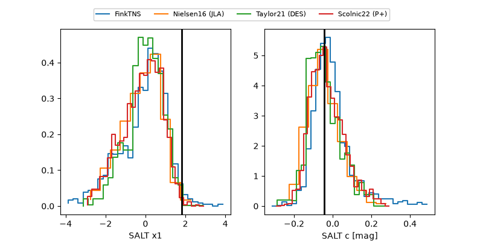

2026abmv
Target 2026abmv at 2026-09-22 15:05
Aliases and brokers:
FINK-ZTF: ztf.fink-portal.org/ZTF26abssrlp
Lasair-ZTF: lasair-ztf.lsst.ac.uk/objects/ZTF26abssrlp
ALeRCE-ZTF: alerce.online/object/ZTF26abssrlp
YSE-PZ: ziggy.ucolick.org/yse/transient_detail/2026abmv
TNS name: wis-tns.org/object/2026abmv
Direct TNS query: direct search
alt names
ZTF26abssrlp (ztf,fink_ztf)
2026abmv (tns,yse)
ATLAS26lji (atlas)
Coordinates:
equatorial (ra, dec) = 33.2207,+12.95218
equatorial (HMS+DMS) = 02:12:52.97,+12:57:07.84
galactic (l, b) = (151.7593,-45.31207)
Flags:
TNS type: nan
peak dt: +8.1
Photometry:
last ztfg=20.11, ztfr=20.03
5 ztfg, 3 ztfr detections
Lightcurve
Visibility



Additional plots
